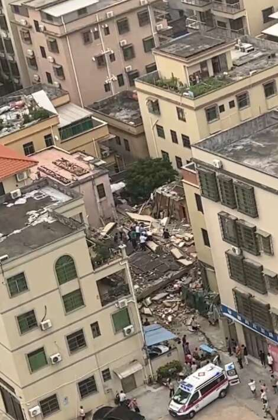
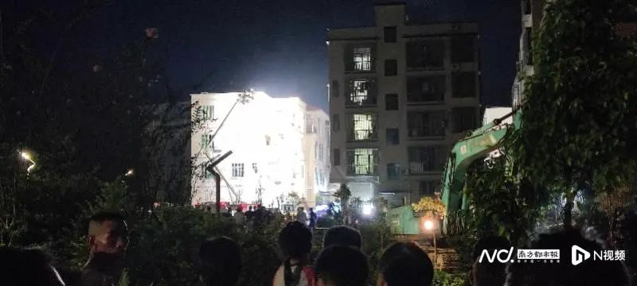
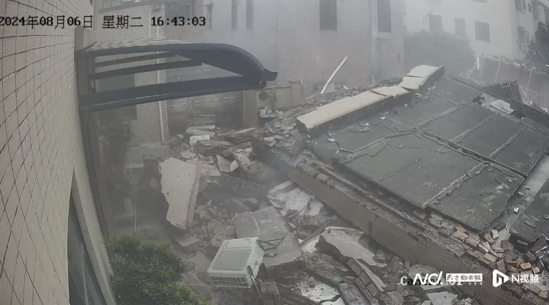

今日（8月6日）下午，广东珠海市斗门区井岸镇泥湾村一栋2层居民楼突然发生坍塌，多段救援视频在网上热传引发关注。当晚20时许，珠海市斗门区应急管理局发布情况通报，称事故中有4人被困，截至20时许，已搜救出被困人员2人，其中1人伤势轻微、1人正在全力救治。
官方通报称，8月6日16时50分许，斗门区井岸镇泥湾村一栋两层居民楼发生倒塌，导致4人被困。事故发生后，应急、公安、消防、卫健等相关部门已第一时间赶赴现场。截至20时许，已搜救出被困人员2人，其中1人伤势轻微、1人正在全力救治。抢险处置和善后工作正在紧张进行，事故原因正在进一步调查中。

网友拍摄的多段视频显示，坍塌房屋周围均是低楼层民房，房屋坍塌时曾冒出滚滚白烟，现场一片狼藉，坍塌的墙体、破碎的水泥块和裸露的钢筋交错堆积。消防、公安以及医护人员正在现场搜救，2台挖掘机等救援车辆已经进入现场。
网传坍塌房屋搜救视频截图
晚上7时30分许，当南都记者赶到现场时，消防、医护人员等仍在组织搜救，距事发地点五六十米外已经拉起警戒线。

记者赶到坍塌房屋附近时，搜救仍在进行中
据附近小区的保安介绍，当天下午五点钟左右，曾听到砰的一声，“声音很大，当时还以为地震了”。周边多位居民表示，发生坍塌的系一栋自建房，有两层。
周边居民提供的一段监控视频清晰还原了房屋坍塌的全过程。视频显示，6日下午16时42分，涉事楼房仍完好无损，约12秒钟后，伴随一声巨响，房屋从一层开始突然坍塌，墙体四分五裂，现场随即升腾起大片烟雾，十余秒后，伴随烟雾渐渐散去，原本完好的楼房已经沦为废墟，破碎的墙体、水泥块、空调外机等散落一地。可以看到，房屋倒塌时，墙体内有橙红色火光闪烁。房屋坍塌的具体原因，尚有待进一步调查。

视频监控记录下房屋坍塌的全过程据一位目击者称，塌陷的房屋呈倾斜状，塌陷不久后就看到有伤者被救出。“事发时，可以看到一股黑烟，爆炸瞬间有震感。”该名目击者说。
截至南都记者20时许发稿，搜救工作仍在进行中。